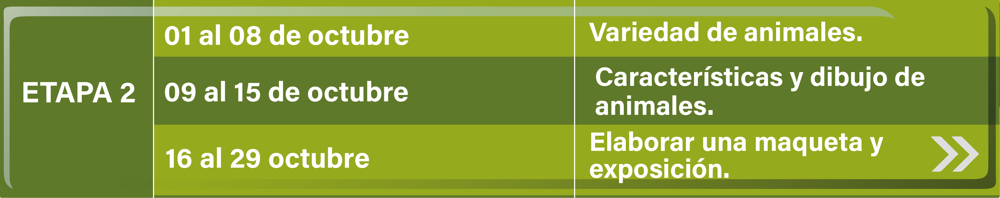
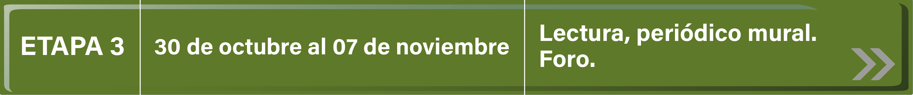
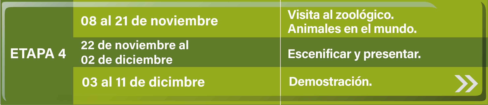

Inicio
En esta experiencia que apenas inicia se puede decir que la educación actual contempla una nueva forma de llegar al aprendizaje, desde la propia perspectiva que estamos viviendo haciendo uso de los medios electrónicos que permiten la comunicación de los alumnos y profesores a grandes distancias y que fortalece los esfuerzos educativos, para que los maestros conduzcan a los alumnos hacia el aprendizaje en el que ellos participen a través del trabajo en equipo, la investigación, el intercambio de experiencias y opiniones que forman el marco contextual en el que los alumnos llegarán a construir conocimientos de calidad.
El desarrollo del proyecto deberá enmarcarse en la utilización de diferentes tecnologías que proporcionan información diversa: documentos, consulta con expertos, proyección de videos, búsquedas en internet, experiencias a través del correo electrónico y foros de discusión.
De los trabajos elaborados por los participantes.
- Deberán desarrollar cada una de las actividades de cada etapa fundamentando sus mensajes de acuerdo a fuentes consultadas.
- Sus aportaciones finales deberán ser creaciones de los alumnos y enviarse dentro del tiempo programado para esa etapa.
Inicio
Presentación
El proyecto educativo "Los Animales", está dirigido a los niños de educación preescolar para apoyar a las educadoras y educadores con actividades que proponen el uso de la tecnología en el aula, sus acciones están encaminadas a desarrollar el tema los animales en forma significativa, tomando en cuenta los principios de respeto a las necesidades e intereses de los niños, su capacidad de expresión y juego, anotados en el programa de educación preescolar.
Este proyecto busca favorecer el proceso de socialización del niño, su relación con la naturaleza, ayuda a ejercitar su psicomotricidad, favorece nociones matemáticas, el lenguaje oral, escrito y la escritura al intercambiar experiencias a través de dibujos y audio, colaborando de esta manera con el propósito de elevar la calidad de la educación.
Este proyecto está organizado en cuatro etapas de interacción que ofrecen a los participantes del jardín de niños la práctica de una vida social inspirada en la relación del niño con su medio natural y social, favoreciendo sus dimensiones afectiva, social, intelectual y física.
En el calendario se encuentra la duración y actividades a seguir.
Para iniciar la participación en el proyecto Los Animales es necesario inscribir al grupo llenando la ficha de inscripción.
Antes de inscribirse es importante que las educadoras y educadores, realicen las actividades propuestas en la etapa previa del calendario de actividades del proyecto y conozcan la estrategia de operación y sus características generales.
La educadora y el educador motivarán a los alumnos tomando en cuenta aspectos metodológicos fundamentales como: Momentos de búsqueda, reflexión y experimentación de los niños; la intervención del docente durante el desarrollo de las actividades y la relación con los bloques de actividades con el proyecto.
Para cada etapa según corresponda y a criterio del docente se organizará al grupo por equipos, en forma individual al elaborar dibujos libres y moldeado en plastilina, o grupal al realizar los periódicos murales. El educador decidirá la forma de trabajo a realizar de acuerdo a las necesidades del grupo. Aunque el tiempo de cada etapa está marcado en el calendario de actividades, es importante hacer notar que los niños determinarán el tiempo real de acuerdo a su interés.
En cada etapa se abrirá un foro para que las educadoras y los educadores intercambien experiencias adquiridas durante el desarrollo del proyecto.
Los productos finales serán escogidos y escaneados por los niños y educadores para publicarlos en el periódico mural y/o en la red social de su preferencia.
Las herramientas que se utilizarán para el desarrollo de este proyecto serán Internet, libros del rincón, computadoras.
La evaluación será permanente de acuerdo a las actividades de las etapas programadas, las educadoras y los educadores se harán responsables de motivar a los participantes apoyándolos en las actividades propuestas y deberán estar siempre en contacto con su coordinador para salir de dudas o hacer comentarios.
Actividades
El proyecto educativo Los Animales propone cuatro etapas a realizar organizadas en temas que parten de acuerdo al interés del niño. En cada etapa se sugieren actividades que se pueden integrar a las que se realizan cotidianamente en la labor educativa de preescolar, de tal manera que este proyecto no es algo aislado a realizar sino una estrategia didáctica encaminada a fortalecer el quehacer docente y permite el uso de la tecnología en forma flexible, que puede adaptarse a las necesidades de los niños de este nivel educativo.
Para el desarrollo de las etapas se marcaron tiempos tentativos, tomando en cuenta que el tiempo real lo determinará el niño de acuerdo a su propio interés.
Cada etapa lleva un nombre que da idea de las actividades a realizar.
ETAPA PREVIA: La mascota. (Animales domésticos)
Para inscribirse la educadora o educador deberá realizar una etapa previa para dar a conocer el proyecto, motivar e introducir a los niños en la temática.
ETAPA UNO: Inscripción
En esta etapa se llena la ficha de inscripción y se envía.
ETAPA DOS: Variedad de animales.
Los niños guiados por su educadora investigan la diversidad de animales en forma grupal, por equipos o individual, utilizando diferentes videos.
ETAPA TRES: Conocer los animales.
En esta etapa el niño enriquece sus conocimientos visitando la biblioteca, elaborando un periódico mural, además la maestra realiza lecturas en voz alta.
ETAPA CUATRO: Un viaje al Zoológico
El niño navega en Internet en las páginas:
- Zoológico Electrónico
- Zoológico Interactivo
Tiene un acercamiento con los animales visitándolos en el zoológico (virtual o presencial), fijando la atención en los animales característicos de su región.
Para finalizar el niño tiene la oportunidad de desarrollar sus aptitudes artísticas llevando al escenario los productos alcanzados con la puesta en marcha del proyecto Los animales dirigido a la comunidad educativa. Intercambio de experiencias utilizando la aplicación animalitos, el foro para maestros y sonido de los animales.
Ubicación curricular
PREESCOLAR SEGUNDO Y TERCER GRADO
Competencia que se favorece
Observa características relevantes de elementos del medio y de fenómenos que ocurren en la naturaleza, distingue semejanzas y diferencias y las describe con sus propias palabras
Aprendizajes esperados
- Describe características de los seres vivos (partes que conforman una planta o un animal) y el color, tamaño, textura y consistencia de elementos no vivos.
- Clasifica elementos y seres de la naturaleza según sus características, como animales, según el número de patas, seres vivos que habitan en el mar o en la tierra, animales que se arrastran, vegetales comestibles y plantas de ornato, entre otros.
Competencia que se favorece
Competencia que se favorece: Busca soluciones y respuestas a problemas y preguntas acerca del mundo natural
Aprendizaje esperado
Quinto grado
- Explica los cambios que ocurren durante/después de procesos de indagación: cómo cambia un animal desde que nace; cómo el agua se hace vapor o hielo; cómo se transforman alimentos por la cocción o al ser mezclados, y cómo se tiñen o destiñen la tela y el papel, entre otros, empleando información que ha recopilado de diversas fuentes.
Calendario
  
Etapa Previa Del 15 de febrero al 1 de marzo
- El educador revisa el contenido de todo el proyecto.
- Presencia de una mascota en el salón de clases.
- Motivar diálogo sobre las características y cuidados de la mascota.
- Comentar sobre las mascotas personales.
- Elaborar un friso donde cada niño dibuja vivencias con su mascota, conservarlo para utilizarlo en la etapa 3.
- Escuchar un cuento. (Lo lee la educadora “Alrededor de la Granja”) (texto y audio) Alrededor de la Granja
- Proyectar el video Los animales para niños (animales salvajes, animales de granja y animales acuáticos)
- Dialogar con los niños acerca de la existencia de fuentes de información como: Internet, Biblioteca, videos y proyectos educativos como el de Red escolar.
- Invitar a los niños a investigar más sobre los animales y a inscribirse en el proyecto "LOS ANIMALES " que ofrece Red Escolar en Preescolar Sinaloa.
Etapa 1 Inscripción Del 2 al 8 de marzo
Llenar el formato de inscripción al proyecto "LOS ANIMALES"
De igual manera será la forma de distribución de los alumnos para el desarrollo de las actividades. Se aconseja la organización por equipos.
Etapa 2 Variedad de Animales Del 9 al 15 de marzo
Ver el video El sonido de los animales:
Retomar los coros y sonidos de animales apoyados por el maestro de educación física quien los guiará a realizar imitaciones de movimientos característicos de ciertos animales.
De acuerdo a la investigación hecha por los niños nace el interés de realizar otras actividades para conocer la diversidad de animales.
Escuchar ¿qué es? ¿ADIVINA QUÉ ES?
Del 16 al 24 de marzo
Observar un video cuya temática esté relacionada con los animales y comentarlo en grupo. Se sugieren éstos:
En ingles:
Elaborar en forma individual dibujo libre o modelado en plastilina de acuerdo a su interés.
21 de marzo al 1 de abril
- Recolectar material para elaborar una maqueta y montar una exposición.
- Montar una exposición de la maqueta, los trabajos individuales (en forma libre), realizar una clasificación agrupando los animales de acuerdo a sus características (Tamaño y color, granja, selva, acuáticos).
- Participación del maestro en foro Variedad de animales.
Etapa 3 Conocer los animales Del 2 al 8 de abril
- En el rincón de libros del salón, el niño elige un libro de animales para que la maestra realice una lectura en voz alta.
- La educadora aplica las estrategias de lectura que se manejan en el nivel preescolar.
- Elaborar en grupo un periódico mural de acuerdo a lo que investigó en el rincón del libro. Se puede incluir el friso que se realizó en la etapa previa
- Invitar a la comunidad escolar a observar el periódico elaborado, responder a las preguntas y comentarios que surjan.
- Intercambio de dibujos a través del foro CONOCER LOS ANIMALES .
Etapa 4 Un viaje al zoologico Del 25 al 29 de abril
- Navegar por Internet y consultar la páginaEl Zoológico Electrónico
- Visitar el Zoológico de Chapultepec Interactivo y elaborar dibujo libre.
- Visitar el Zoológico de Guadalajara recorridos virtuales y elaborar dibujo libre.
- Organizar y realizar una visita guiada al zoológico para tener acercamiento con diversos animales y distinguir los animales característicos de la región.
- Conocer animales que viven en otras partes del mundo.
Del 2 al 13 de mayo
Del 14 al 20 de mayo
Foros
FORO I del 28 de marzo al 1 de abril
Variedad de animales
Favor de ingresar al sigueinte enlace: Foro I del 28 de marzo al 1 de abril
FORO II del 4 al 28 de abril
Conocer los animales
Favor de ingresar al sigueinte enlace: Foro II del 4 al 28 de abril
FORO III del 23 al 31 de mayo
Un viaje al zoológico
Favor de ingresar al sigueinte enlace: Foro III del 23 al 31 de mayo
Actividades Interactivas
Cuento (Audio y texto)
“Alrededor de la Granja”
Esta mañana la granja se encuentra en plena efervescencia. Francisco y Sofía están de vacaciones y fueron a visitar a los animalitos que viven en la granja de su tía Lupita. Al primero que ven llegar es a Boby, el dulce perro guardián, (ladra) es tan noble que no asusta ni a un pajarito (gañe impaciente) pero hoy está impaciente (gañido); palomas y tórtolos se arrullan cerca de él (cantalean y revolotean). La tía Lupita pregunta ¿Dónde estarán los niños?, vaya aquí está Sofía visitando a las cabras (balan), las cuales tienen algunos cabritos que se acercan y juegan con la niña, Sofía comenta a su tía que la leche de cabra es muy buena y que sirve también para hacer un delicioso queso que le encanta a Francisco. Los niños siguen su recorrido por la hermosa granja.
A lo lejos se escucha… (Balan)… eran las ovejas que se acercaban a ellos para jugar- ¡mira!, el rebaño ha crecido – comenta Francisco- -cada oveja ha tenido dos o tres pequeños, así pronto tendremos una hermosa familia de borreguitos.
Sofía admira la espesa piel blanca como la nieve que tienen las ovejas. Su tía les ha prometido tejerles unos suéteres con la lana de los borregos.
Más adelante en el corral hay un gran escándalo, los patos graznan (graznidos); los pavos cloquean (cloqueo) y el gallo busca un palo para subirse y lanzar un ki ki ri ki; las ocas se inquietan (graznan) – este gallo está loco- ya hace mucho que amaneció-. – malas lenguas. – replica una gallina. El gallo canta para saludar a Francisco y Sofía (Canta). Los pollitos pían aprobando lo que dice su mamá (pían).
Francisco y Sofía (Canta). Los pollitos pían aprobando lo que dice su mamá (pían).
Un pato muy contento mete la cabeza en el agua para quitarse el calor.
Casi tan orgulloso como el pavo real el primo Fermín ayuda a su padre, por otra parte las hermosas vacas blancas con manchas negras, esperan en la pradera la visita de los pequeños vacacionistas, algunas mugen (mugidos), otras recostadas en el prado se dedican a rumiar la hierba (comen).
Los becerros que todavía no conocen a Francisco y a Sofía están impacientes por verlos (balan).
Cerca de allí exclama Sofía- parece que la familia de conejos ha crecido mucho. – ¡Sí! – Responde su prima Rebeca.- Fermín y papá tuvieron que hacer la conejera más grande-.
La gata Chispita maúlla con gran preocupación, pues se da cuenta de la desaparición de sus inquietos y graciosos gatitos (maúlla), los cuales se encuentran en el establo conociendo al nuevo becerro que acaba de nacer (bala).
Francisco y Sofía vienen a saludar a Lola, la yegua de la granja.
Lola se pasea en compañía de su potro que nació hace un mes (relincha).
Cuando Lola tuvo a su pequeño, lo rodeo de todo su afecto y esperó pacientemente a que tuviera fuerza suficiente para levantarse y empezar a galopar a su lado.
El potro se llama centella porque es ligero y rápido como el viento. ¡Mira! - Que gracioso es- le dice Sofía a Francisco y es así como terminan las vacaciones y los niños regresan a la escuela.
¿ADIVINA QUÉ ES?
- Pon atención amiguito y sabrás a que animalito escucharás … Es un gallo.
- Pon atención amiguito y sabrás a que animalito escucharás … Es un pájaro
- Pon atención amiguito y sabrás a que animalito escucharás … Es un gato.
- Pon atención amiguito y sabrás a que animalito escucharás … Es un perro.
- Pon atención y sabrás a qué animalito escucharás … Es un elefante.
- Pon atención y sabrás a qué animalito escucharás … Es un burro.
- Pon atención y sabrás a qué animalito escucharás … Es un león.
- Pon atención y sabrás a qué animalito escucharás … Es un caballo.
- Pon atención y sabrás a qué animalito escucharás … Es un delfín.
- Pon atención y sabrás a qué animalito escucharás … Es una foca.
- Pon atención y sabrás a qué animalito escucharás … Es una vaca.
- Pon atención y sabrás a qué animalito escucharás … Es un pato.
- Pon atención y sabrás a qué animalito escucharás … Es una oveja.
Animales de la selva
Dar click en la imagen para descargar y empezar a jugar
Animales de la granja
Dar click en la imagen para descargar y empezar a jugar
Animales del bosque
Dar click en la imagen para descargar y empezar a jugar
Bienvenido

Conociendo la Basura
Proyectos colaborativos
¡Atrévete a guiar a tus alumnos en esta nueva aventura!
Aprenderán sobre:
Los animales que viven en el agua durante toda o la mayor parte de su vida.
Son los animales domésticos que suelen formar parte de las poblaciones rurales.
Aquellos que hacen de su hábitat los bosques lluviosos tropicales o templados.